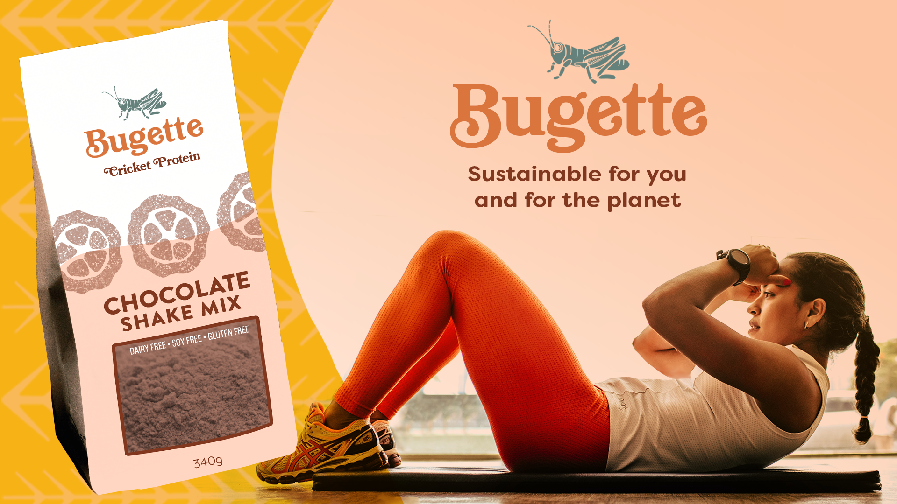
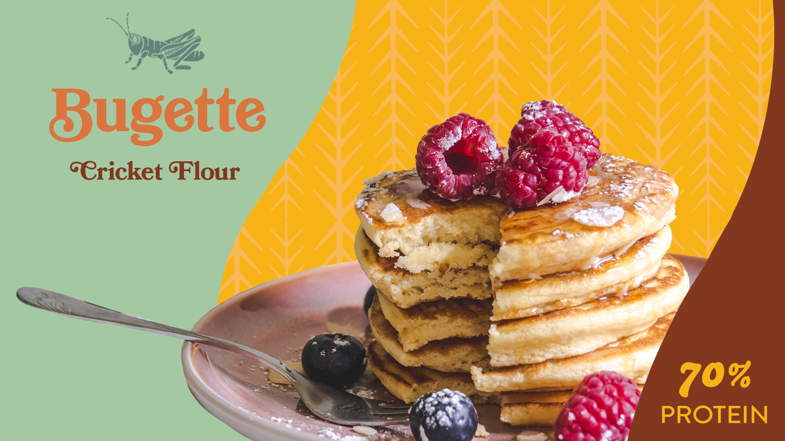
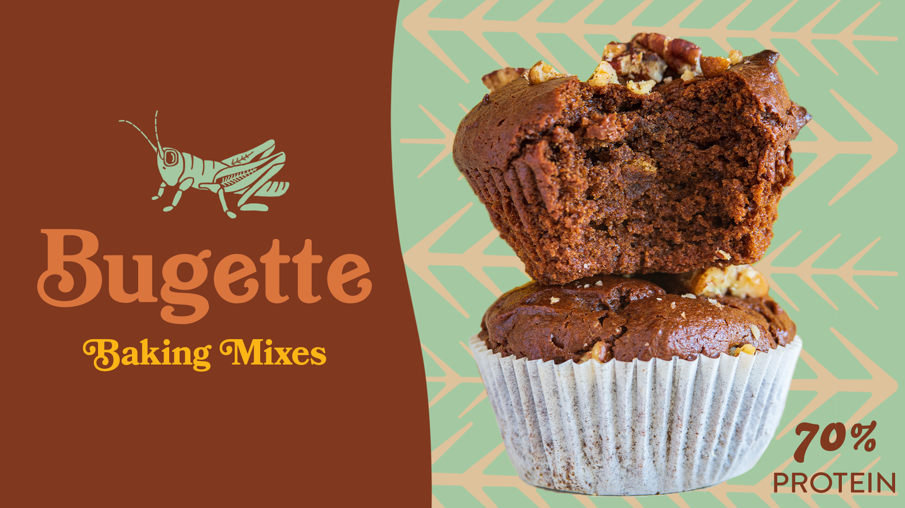
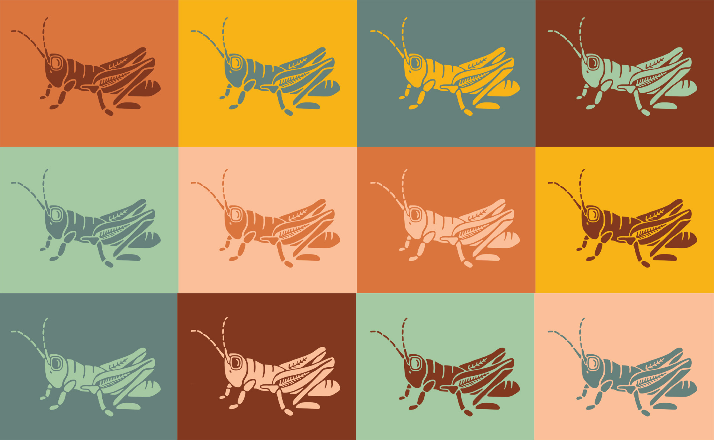

GOAL: Alternative protein products made from insects are becoming more common, but many existing brands position themselves around toughness and primal nutrition. A quick survey of the market revealed branding dominated by dark colors, rough textures, and messaging focused on “back-to-basics” protein. While this approach highlights the nutritional benefits, it does little to make the product feel appetizing or approachable to everyday grocery shoppers.
ROLE: Bugette was a self-initiated branding and packaging project created to explore a different visual strategy for alternative protein products. I developed the concept, brand identity, packaging system, and supporting marketing elements from the ground up.
PROCESS: My goal was to create a brand that felt inviting, nostalgic, and genuinely delicious. I designed the visual identity around warm colors inspired by terra-cotta seaside villages and paired them with soft shapes and friendly typography to evoke comfort and familiarity. The logo mark, or “bug,” is a stylized cricket. Small stalks of wheat are integrated into the legs of the insect to symbolize the grain it replaces as a protein source. This detail became a repeating visual motif that appears as a pattern throughout the packaging and marketing materials, helping tie the brand system together. Rather than emphasizing the insect itself, the design focuses on taste, sustainability, and approachability. The packaging avoids literal imagery of bugs in favor of playful graphics, soft patterns, and colors that make the product feel wholesome and appealing on a grocery store shelf.
OUTCOME: The final concept positions cricket-based protein as a sustainable health food wrapped in charming, approachable branding. By shifting the visual narrative from “extreme protein source” to “delicious and responsible food choice,” the design aims to appeal to consumers who value nutrition, environmental impact, and products that feel enjoyable to buy and eat.



